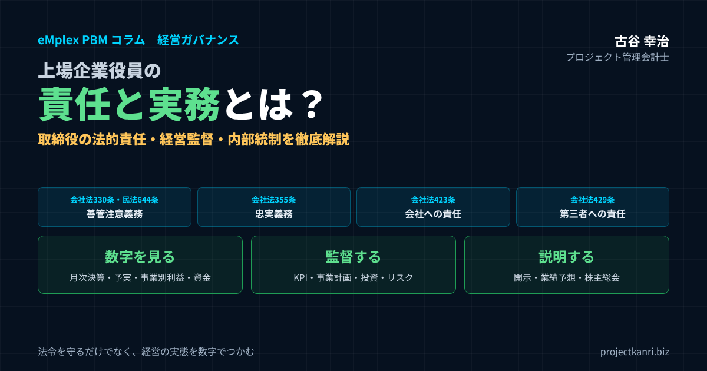

上場企業役員の責任と実務とは？取締役の法的責任・善管注意義務・経営監督・内部統制を徹底解説―数字を見る責任・監督する責任・説明する責任と、役員が把握すべき経営管理の仕組み

結論：役員の責任とは、法令を守るだけでなく、経営の実態を数字でつかみ、判断し、監督し、説明すること
この記事のポイント
- 取締役は善管注意義務（会社法330条・民法644条）と忠実義務（会社法355条）、他の取締役の監視・監督義務を負う
- 違反すれば会社への任務懈怠責任（423条）、悪意・重過失なら第三者責任（429条）
- 経営判断原則が守るのは、正確な数字と十分な情報で検討した判断
- 役員の実務責任は数字を見る・監督する・説明するの三つ
- 責任の軽減の仕組み：責任の一部免除、責任限定契約、補償契約、D&O保険
プロジェクト管理会計士の古谷です。私は、ITのCRMソフトウェアの会社であるエンプレックスで取締役CFOを務め、上場企業のホリプロでは経営企画の責任者として開示の業務やグループの経営管理を担当しました。独立してからは、上場企業や上場を目指す企業を含む200社を超える会社の経営管理をご支援しています。
その中で、上場企業の役員に就任される方から、「役員としてどのような責任を負うのか」「何をしていれば責任を果たしたことになるのか」というご相談をいただくことがあります。会社法の解説書を読めば、善管注意義務や損害賠償の責任については分かります。しかし、日々の実務で何をすればよいのかまでは、なかなか書かれていません。
私の考えでは、役員の責任とは、法令を守ることだけではありません。経営の実態を数字で把握し、適切な意思決定と監督を行い、株主や投資家に対して説明できる状態をつくることです。本記事では、これを「数字を見る責任」「経営を監督する責任」「説明する責任」の三つに整理し、法的な責任の基本とあわせて、上場企業の役員の実務をお伝えします。
なお、本記事は、役員の責任と実務についての考え方を、経営管理の実務家の立場から整理したものです。個別の事案における法的な判断については、弁護士などの専門家にご相談ください。
上場企業の役員とは？取締役・監査役・執行役・執行役員の違い
最初に、上場企業の「役員」とは誰を指すのかを整理しておきます。日常的には、執行役員や本部長を含めて「役員」と呼ぶこともありますが、会社法上の役員と、社内の呼び方としての役員は異なります。
| 区分 | 会社法上の位置づけ | 主な役割 |
|---|---|---|
| 取締役 | 会社法上の役員 | 取締役会の構成員として業務執行の決定と監督 |
| 監査役 | 会社法上の役員 | 取締役の職務執行の監査 |
| 会計参与 | 会社法上の役員 | 取締役と共同で計算書類を作成 |
| 執行役 | 指名委員会等設置会社の機関（役員等） | 業務の執行 |
| 執行役員 | 会社法上の役員ではない（重要な使用人） | 業務の執行（社内の制度） |
会社法上の役員は、取締役、会計参与、監査役です。また、会社法上の責任の規定では、これに執行役と会計監査人を加えた「役員等」が対象になります。一方、多くの会社で置かれている執行役員は、会社法上の役員ではなく、通常は取締役会が選任する、業務の執行を担う重要な使用人という位置づけです。執行役員は、会社法上の役員としての責任の規定の直接の対象にはなりませんが、従業員としての責任や、会社の規程に基づく責任を負います。
上場企業の機関の設計には、監査役会設置会社、監査等委員会設置会社、指名委員会等設置会社の三つの形があります。どの形を採るかによって、取締役会の役割や、監査を担う機関が異なります。
| 形 | 監査・監督を担う機関 | 特徴 |
|---|---|---|
| 監査役会設置会社 | 監査役会（社外監査役が半数以上） | 日本で広く採用 |
| 監査等委員会設置会社 | 監査等委員会（取締役で構成） | 監査を担う取締役が取締役会で議決権を持つ |
| 指名委員会等設置会社 | 指名・監査・報酬の三委員会 | 監督と執行の分離（執行役） |
本記事では、主に取締役の責任と実務を中心に解説し、社外取締役や監査役の役割についても後半で触れます。
取締役が負う法的責任の全体像
取締役が負う法的な責任は、大きく、会社に対する責任、第三者に対する責任、そしてその他の法令に基づく責任に分けられます。
| 区分 | 主な根拠 | 内容 |
|---|---|---|
| 会社に対する責任 | 会社法423条など | 任務懈怠による会社の損害の賠償 |
| 第三者に対する責任 | 会社法429条 | 職務につき悪意・重過失がある場合、開示書類の虚偽記載など |
| 金融商品取引法上の責任 | 金融商品取引法 | 開示書類の虚偽記載、インサイダー取引など |
| 刑事責任 | 会社法・刑法など | 特別背任など |
| その他の法令 | 労働・独禁・個人情報など | 事業に関わる法令の違反 |
これらの責任の出発点にあるのが、取締役が会社に対して負う義務、すなわち善管注意義務と忠実義務です。まず、この二つの義務から見ていきます。
善管注意義務と忠実義務
会社と役員との関係は、委任の関係です（会社法330条）。そのため、取締役は、職務を行うにあたって、善良な管理者の注意をもって職務を行う義務、いわゆる善管注意義務を負います（民法644条）。
善管注意義務とは、取締役という地位にある人に一般的に求められる水準の注意を払って、職務を行う義務です。その人個人の能力ではなく、その地位にある人として通常期待される注意の水準が基準になります。つまり、「自分は財務に詳しくないから、数字のことは分からなかった」という言い訳は、原則として通用しないということです。
加えて、取締役は、法令、定款、株主総会の決議を遵守し、株式会社のため忠実にその職務を行う義務を負います（忠実義務・会社法355条）。忠実義務は、とくに会社の利益と取締役個人の利益がぶつかる場面で問題になります。会社と競合する事業を自ら行う競業取引や、会社と自分との間の取引である利益相反取引については、取締役会などの承認が必要とされています（会社法356条、365条）。
さらに、取締役会の構成員である取締役には、他の取締役の職務の執行を監視し、監督する義務もあります（会社法362条2項2号）。自分の担当の業務だけをしっかり行っていればよいわけではなく、他の取締役の職務の執行に問題がないかにも目を配る必要があるのです。
| 義務 | 根拠 | 内容 |
|---|---|---|
| 善管注意義務 | 会社法330条・民法644条 | 地位にふさわしい注意をもって職務を行う |
| 忠実義務 | 会社法355条 | 法令・定款・株主総会決議を守り、会社のため忠実に職務を行う |
| 競業・利益相反取引の規制 | 会社法356条・365条 | 取締役会などの承認が必要 |
| 監視・監督義務 | 会社法362条2項2号 | 他の取締役の職務執行の監視・監督 |
この監視・監督の義務は、実務的には非常に重い意味を持ちます。取締役会で報告される数字や案件について、疑問を持ち、質問し、必要な情報を求めることは、取締役の権利であると同時に義務でもあります。取締役会で黙って資料を眺めているだけでは、監視・監督の義務を果たしたことにはなりません。
善管注意義務の水準は、会社の規模や業種、その取締役が置かれた状況によっても変わり得ます。上場企業の取締役には、多くの株主から経営を託されている立場として、相応の水準の注意が求められると考えておくべきでしょう。就任したばかりで事情が分からない、という状況であっても、分からないことを放置せず、説明を求め、学ぶ姿勢が求められます。
会社に対する損害賠償責任（任務懈怠責任）
善管注意義務や忠実義務などに違反した場合、取締役は、会社に対して任務懈怠の責任を問われることになります（会社法423条）。会社法423条1項は、役員等がその任務を怠ったときは、株式会社に対し、これによって生じた損害を賠償する責任を負うと定めています。
任務懈怠には、善管注意義務の違反、法令や定款への違反、監視義務の違反、忠実義務の違反などが含まれます。任務懈怠の責任は過失責任とされ、取締役が自らに過失がないことを主張し立証できれば、損害賠償の責任を負わないとされています。
| 項目 | 内容 |
|---|---|
| 任務懈怠の例 | 善管注意義務違反、法令・定款違反、監視義務違反、忠実義務違反 |
| 責任の性質 | 過失責任（過失がないことを立証できれば責任を負わない） |
| 要件 | 任務懈怠、帰責事由、損害、因果関係 |
| 追及の手段 | 会社による請求、株主代表訴訟（会社法847条） |
会社に対する責任を追及する手段として、株主代表訴訟の制度があります（会社法847条）。会社が取締役の責任を追及しない場合に、一定の要件を満たす株主が、会社に代わって取締役の責任を追及する訴えを起こすことができる制度です。上場企業では、株主の数が多く、不祥事や大きな損失が生じたときに、株主代表訴訟が起こされることがあります。
このほかにも、分配可能額を超えて剰余金の配当を行った場合の責任や、株主の権利の行使に関して利益を供与した場合の責任など、会社法が役員の責任を個別に定めているものもあります。
株主代表訴訟のリスクを過度に恐れる必要はありませんが、上場企業の役員である以上、自分の判断が後から株主によって検証される可能性があることは、常に意識しておくべきでしょう。その意識が、判断の前に情報を集め、リスクを検討し、記録を残すという、良い経営判断の習慣を支えます。
経営判断原則：取締役の経営判断と責任の範囲
経営には、常に不確実性が伴います。新しい事業への投資、M&A、大型の受注の判断。結果的に失敗して会社に損害が生じることもあります。では、結果的に損害が生じたら、取締役は必ず責任を負うのでしょうか。
この点について、裁判例では、いわゆる経営判断原則と呼ばれる考え方が採られてきました。取締役の経営上の判断については、判断の過程と判断の内容に照らして、著しく不合理な点がない限り、善管注意義務の違反とはされない、という考え方です。判断の前提となる事実の調査や情報の収集が合理的に行われたか、そして、その事実をもとにした判断の内容が著しく不合理でないかが問われます。
| 観点 | 確認されること | 実務での備え |
|---|---|---|
| 判断の過程 | 事実の調査・情報収集が合理的だったか | 正確な数字、リスク検討、代替案の比較、専門家の意見 |
| 判断の内容 | その事実をもとにした判断が著しく不合理でないか | 判断の根拠を資料と議事録に残す |
ここで、経営管理の実務家として強調したいのは、経営判断原則が守ってくれるのは、「きちんと情報を集め、きちんと検討した判断」だということです。判断の前提となる数字が不正確だった、リスクの検討が行われていなかった、検討の過程が記録に残っていない。こうした場合には、判断の過程が合理的だったと説明することが難しくなります。
つまり、取締役が経営判断の責任から身を守るための最善の方法は、判断の前に、正確な数字と十分な情報をそろえ、リスクを検討し、その過程を取締役会の資料と議事録に残しておくことです。これは、法的な防御の話であると同時に、良い経営判断をするための基本でもあります。正確な数字に基づいて判断することは、取締役自身を守ることでもあるのです。
第三者に対する損害賠償責任
取締役は、会社に対してだけでなく、第三者、つまり取引先や株主、債権者などに対しても、損害賠償の責任を負うことがあります（会社法429条）。
会社法429条1項は、役員等がその職務を行うについて悪意または重大な過失があったときは、これによって第三者に生じた損害を賠償する責任を負うと定めています。会社に対する責任が過失責任であるのに対し、第三者に対する責任は、職務の執行について悪意または重大な過失があった場合に生じます。
また、会社法429条2項は、計算書類や事業報告などの重要な事項について虚偽の記載をした場合などにも、役員等が第三者に対して責任を負うことを定めています。上場企業では、有価証券報告書などの開示書類に虚偽の記載があった場合に、金融商品取引法に基づいて役員の責任が問われることもあります。
| 項目 | 内容 |
|---|---|
| 1項 | 職務を行うについて悪意または重大な過失があったとき、第三者に生じた損害を賠償 |
| 2項 | 計算書類・事業報告などの重要事項の虚偽記載などの場合の責任 |
| 監視の懈怠 | 他の役員の不正・任務懈怠を看過した場合も責任が生じうる |
判例では、他の役員の不正行為や任務懈怠を看過した場合、たとえば業務の一切を任せきりにして業務の執行に何ら注意しなかった場合にも、悪意または重大な過失による任務懈怠として、第三者に対する責任が生じることが示されています。名前だけの取締役であっても、責任を免れるとは限らないということです。
社内取締役と社外取締役、業務執行と非業務執行で責任はどう違うか
取締役と一口に言っても、会社の中での役割はさまざまです。代表取締役、業務を担当する社内の取締役、業務を執行しない社外取締役。役割によって、責任の重さや、問われる場面はどう違うのでしょうか。
| 区分 | 主な役割 | 注意すべき点 |
|---|---|---|
| 代表取締役 | 業務の全体を統括 | 広い範囲への注意、他の役員の監督 |
| 業務執行取締役（社内） | 担当業務の執行 | 担当領域の詳細な把握と適切な執行 |
| 非業務執行取締役（社外） | 独立した監督と助言 | 提供情報の吟味、疑問の質問、調査の要求 |
いずれも善管注意義務・忠実義務・監視監督義務を負う点は共通です。
法的には、どの取締役も、善管注意義務と忠実義務、そして監視・監督の義務を負う点は同じです。ただし、実際に求められる注意の内容は、その取締役の役割や、知り得た情報によって変わると考えられています。業務を担当する取締役は、担当する業務について、詳しい情報を持ち、業務を適切に執行する責任を負います。代表取締役は、会社の業務の全体を統括する立場として、より広い範囲に注意を払う必要があります。
業務を執行しない社外取締役は、日常の業務の詳細を知る立場にはありませんが、取締役会に提供された情報や、自らが知り得た情報にもとづいて、監督の役割を果たすことが求められます。疑わしい情報に接したときに、それを見過ごさず、質問し、調査を求めることが、社外取締役の監視・監督の義務の中心です。
また、責任の軽減の仕組みにも違いがあります。先に述べた責任限定契約は、業務を執行しない取締役などとの間で結ぶことができるものです。役員に就任するときは、自分の役割と、それに応じた責任の範囲、軽減の仕組みを確認しておきましょう。
その他の法的責任：金融商品取引法・刑事責任など
会社法の責任のほかにも、上場企業の役員は、さまざまな法令に基づく責任を負う可能性があります。
| 区分 | 例 |
|---|---|
| 金融商品取引法 | 有価証券報告書などの虚偽記載による責任、インサイダー取引 |
| 刑事責任 | 特別背任など |
| 事業に関わる法令 | 労働関係法令、独占禁止法、取引適正化に関する法令、個人情報保護法など |
上場企業に特有なのが、金融商品取引法に基づく責任です。有価証券報告書などの開示書類に、重要な事項についての虚偽の記載があった場合、その書類を提出した会社の役員は、投資家に対して損害賠償の責任を負うことがあります。また、重要な事実を知りながら公表の前に株式を売買する、いわゆるインサイダー取引は、刑事罰の対象になります。
刑事責任としては、会社法の特別背任罪などがあります。また、労働関係の法令、独占禁止法、下請けの取引に関する法令、個人情報の保護に関する法令など、事業に関わる法令の違反について、会社とともに役員個人の責任が問われることもあります。
こうした責任のすべてを、役員が細かく覚えておく必要はありません。大切なのは、会社の中に、法令の違反を防ぎ、問題を早く発見し、適切に対応する仕組みがあるかどうかを、役員が確認していることです。それが、次に述べる内部統制の責任につながります。
責任の軽減の仕組み：責任の一部免除・責任限定契約・補償契約・D&O保険
役員の責任は重いものですが、会社法には、一定の条件のもとで責任を軽減するための仕組みも設けられています。
| 仕組み | 内容 |
|---|---|
| 責任の免除 | 総株主の同意による免除 |
| 責任の一部免除 | 善意・無重過失の場合、株主総会決議または定款に基づく取締役会決議で一部免除 |
| 責任限定契約 | 業務を執行しない取締役・監査役などと、定款の定めに基づき責任の上限を定める契約 |
| 会社補償契約 | 職務執行に関する防御費用などを会社が補償（令和元年改正で創設） |
| 役員等賠償責任保険（D&O保険） | 損害賠償金・争訟費用などを補償（令和元年改正で法的位置づけを明確化） |
適用の要件や範囲は会社法の規定と各社の定款・契約によります。
会社に対する任務懈怠の責任は、総株主の同意があれば免除できます。また、役員が職務を行うについて善意で、かつ重大な過失がないときは、株主総会の決議や、定款の定めに基づく取締役会の決議によって、責任の一部を免除することができます。社外取締役などの業務を執行しない取締役や監査役については、定款に定めを置いたうえで、会社との間で、責任の上限を定める責任限定契約を結ぶこともできます。
さらに、令和元年の会社法の改正により、会社補償契約の制度と、役員等賠償責任保険、いわゆるD&O保険の制度が新たに設けられました。D&O保険は、従前から上場会社を中心に広く普及していましたが、その法的な位置づけや手続きが、この改正で明確になりました。会社補償契約は、役員が職務の執行に関して責任を追及された場合の防御の費用などを、会社が補償する契約です。
これらの仕組みは、役員が過度に萎縮することなく、適切なリスクを取って経営判断を行えるようにするためのものです。ただし、故意や重大な過失がある場合など、軽減や補償の対象にならない場合もあります。役員に就任する際には、自分にどのような責任の軽減の仕組みが適用されるのかを、会社に確認しておくことをおすすめします。
役員報酬と責任：業績連動の考え方
役員の責任を考えるうえで、役員報酬との関係も整理しておきましょう。取締役の報酬は、定款の定めまたは株主総会の決議によって定めることとされています。また、令和元年の会社法の改正により、上場会社などでは、取締役の個人別の報酬の内容についての決定の方針を、取締役会で定めることが求められるようになりました。
報酬の設計は、役員にどのような行動を期待するのかを示すものでもあります。短期の業績だけに連動した報酬は、短期の利益を優先し、長期の投資やリスクの管理を軽視する行動を招きかねません。中長期の業績や企業価値、株主の利益と連動させる報酬の仕組みを取り入れる会社が増えているのは、そのためです。
業績連動の報酬を設計するときに欠かせないのが、業績を正しく測る仕組みです。どの指標で業績を測るのか、その数字は正確か、事業や部門ごとの貢献をどう評価するのか。報酬と業績を連動させるのであれば、その業績の数字の信頼性を確保する管理会計の仕組みが、報酬の公正さの土台になります。
内部統制と取締役の責任
上場企業の取締役の責任を考えるうえで欠かせないのが、内部統制です。取締役は、会社の業務が適正に行われるための体制、いわゆる内部統制システムを整備し、それが適切に運用されているかを監視する責任を負っています。
会社法では、取締役会設置会社において、取締役の職務の執行が法令や定款に適合することを確保するための体制など、業務の適正を確保するための体制の整備は、取締役会が決定すべき事項とされています。大会社では、この体制の整備についての決定が義務づけられています。また、上場企業は、金融商品取引法に基づいて、財務報告に係る内部統制を評価し、内部統制報告書を提出することが求められます。
| 項目 | 内容 |
|---|---|
| 体制の決定 | 業務の適正を確保するための体制の整備は取締役会の決定事項（大会社は決定義務） |
| 財務報告に係る内部統制 | 金融商品取引法に基づく評価と内部統制報告書の提出 |
| 運用の監視 | 内部監査・監査役・内部通報・不正事故の状況を定期確認 |
| 改善の指示 | 問題があれば改善を指示し、進捗を確認 |
ここで大切なのは、取締役の内部統制の責任は、体制を「決める」ことだけでは終わらないということです。決めた体制が、実際に機能しているかを監視する責任があります。内部監査の結果、監査役や監査等委員会からの報告、内部通報の状況、不正や事故の発生の状況。こうした情報を定期的に取締役会で確認し、問題があれば改善を指示することが求められます。
不正会計や品質の偽装などの不祥事が起きたとき、取締役の責任が問われる理由の多くは、不正を防ぎ、早く発見するための体制を整えていなかった、あるいは整えていても機能していないことに気づかなかった、という点にあります。内部統制は、管理の部門の仕事ではなく、取締役の責任そのものなのです。
内部統制の具体的な設計については、別のコラム「内部統制の業務分掌とアクセス権限設計」でも詳しく解説しています。
内部統制の実効性を役員が確認するときの手がかりとして、内部監査の指摘事項の件数と、その改善の状況を、定期的に報告してもらうことをおすすめします。指摘が毎年同じ内容で繰り返されている、改善の期限が守られていない、といった状況があれば、内部統制が十分に機能していない兆しです。
取締役会の役割と運営の実務
取締役の責任を果たす中心の場が、取締役会です。取締役会の役割は、大きく、重要な業務執行の意思決定と、取締役の職務の執行の監督の二つです。
| 区分 | 内容の例 |
|---|---|
| 決議事項 | 重要な財産の処分・譲受け、多額の借財、重要な使用人の選任、重要な組織の変更、内部統制の体制、計算書類の承認など |
| 報告事項 | 業務執行取締役の職務執行状況（3か月に1回以上）、月次業績、内部監査・リスクの状況 |
| 戦略の議論 | 経営戦略、中期計画の進捗、事業ポートフォリオ、主要事業の採算 |
| 監督 | 予算実績、投資案件のモニタリング、KPI、リスク |
会社法では、重要な財産の処分や譲受け、多額の借財、重要な使用人の選任、重要な組織の設置や変更、内部統制の体制の整備など、一定の重要な事項は、取締役会で決定しなければならず、代表取締役などに委任することはできないとされています。また、代表取締役や業務執行取締役は、3か月に1回以上、自己の職務の執行の状況を取締役会に報告しなければなりません。
実務の上で大切なのは、取締役会の議題を、法令で求められる決議事項と報告事項だけで埋めないことです。決議事項と報告事項の処理だけで時間が終わってしまえば、取締役会は、経営の戦略を議論し、業績を監督する場として機能しません。年間の議題の計画を立て、経営の戦略、中期の計画の進捗、主要な事業の採算、リスクの状況といったテーマを、計画的に議題に組み込むことが大切です。
取締役会の資料も重要です。資料が開催の直前に配られる、数字ばかりで論点が分からない、判断に必要な情報が足りない。こうした状態では、取締役は十分な検討ができず、監視・監督の義務を果たすことが難しくなります。資料は開催の数日前までに配り、議案ごとに、何を判断してほしいのか、判断の材料は何か、リスクは何かを明確に示すようにしましょう。
取締役会の運営の振り返りについては、別のコラム「取締役会の実効性評価とは？」で詳しく解説しています。
議事録と発言の記録：役員を守る証拠
取締役会の議事録は、会社法で作成と保存が義務づけられている書類です。しかし、議事録の意味は、法令で求められているから作るということにとどまりません。議事録は、取締役が適切に職務を行ったことを示す、最も重要な証拠になります。
会社法では、取締役会の決議に参加した取締役で、議事録に異議をとどめなかった者は、その決議に賛成したものと推定されるとされています。決議に反対の意見を持っていたのであれば、その意見を議事録に残しておかなければ、後になって反対していたことを証明するのは難しくなります。
| 項目 | 内容 |
|---|---|
| 決議の結果 | 賛成・反対・棄権 |
| 判断の材料 | 提出された資料、前提となる数字 |
| 議論の要点 | 主な質問と回答、検討したリスク |
| 反対・留保の意見 | 異議をとどめる場合はその旨 |
| 社外役員の意見 | 主な指摘と助言 |
| 指示事項 | 担当と期限 |
実務では、議事録に、決議の結果だけでなく、議論の要点、主な質問と回答、社外の役員の意見を記録しておくことをおすすめします。重要な投資の判断であれば、どのような情報にもとづき、どのようなリスクが検討されたのかが、議事録から読み取れることが望ましいでしょう。経営判断原則のもとで判断の過程の合理性を示すためにも、議事録は大きな役割を果たします。
役員の三つの実務責任：数字を見る・監督する・説明する
ここからは、法的な責任の理解を踏まえて、上場企業の役員が日々の実務で果たすべき責任を、三つに整理してお伝えします。
| 責任 | 内容 | 見るもの・すること |
|---|---|---|
| ① 数字を見る責任 | 経営の実態を数字で把握する | 月次決算、予算実績、着地見通し、事業別利益、資金繰り |
| ② 経営を監督する責任 | 計画の実行と成果を継続的に確認する | KPI、事業計画、投資案件、リスク |
| ③ 説明する責任 | 経営判断の根拠と会社の状況を説明する | 開示、業績予想の修正、株主総会、IR |
一つ目は、数字を見る責任です。月次の決算、予算と実績、事業別の利益、資金繰り。会社の経営の実態を、数字で把握する責任です。
二つ目は、経営を監督する責任です。KPI、事業計画、投資の案件、リスクを継続的にモニタリングし、問題があれば早く手を打つ責任です。
三つ目は、説明する責任です。株主や投資家に対して、経営の判断の根拠と、会社の状況を説明できる体制を整える責任です。
この三つは、互いにつながっています。数字を見ていなければ、監督はできません。監督していなければ、説明はできません。そして、説明できない経営判断は、経営判断原則によって守られることも難しくなります。三つの責任は、取締役が善管注意義務を果たすための、実務の上での具体的な姿だと私は考えています。
数字を見る責任：役員が把握すべき経営数値
役員が把握すべき数字は、会社全体の売上や利益だけではありません。会社の経営の実態を正しくつかむためには、少なくとも次のような数字を、毎月確認する必要があります。
| 数値 | 見るポイント |
|---|---|
| 月次の損益 | 売上・粗利・営業利益の実績、前年比 |
| 予算と実績 | 差異の大きさと原因、対策 |
| 着地見通し | 年度の着地予測と目標・業績予想との差 |
| 事業別・部門別・プロジェクト別の利益 | 合計の中に埋もれた赤字・採算悪化 |
| 受注残高・パイプライン | 将来の売上の兆し |
| 資金繰り | 現預金残高、資金の見通し、借入の状況 |
| 主要KPI | 中期計画で掲げた指標の進捗 |
とくに大切なのは、過去の実績だけでなく、将来の見通しを見ることです。先月の売上と利益が予算どおりだったとしても、受注の残高が減っていれば、数か月後の業績は悪化します。大型のプロジェクトで原価が膨らんでいれば、完成の時点で大きな損失が出るかもしれません。年度の着地の見通しを毎月更新し、目標との差を確認すること。これが、私が「フォーキャスト経営」と呼んでいる考え方であり、役員が数字を見る責任の核心です。
数字を見るときには、会社全体の数字だけでなく、事業別、部門別、プロジェクト別の数字まで掘り下げて見ることも大切です。会社全体では利益が出ていても、特定の事業が大きな赤字を出していることがあります。合計の数字の中に、問題が埋もれていないかを確認することが、数字を見る責任です。
そして、数字の質にも目を配る必要があります。月次の決算が遅い、締めた後に数字が何度も修正される、事業別の数字の合計が決算の数字と合わない。こうした状態では、どれほど熱心に数字を見ても、正しい判断はできません。数字そのものの信頼性を確保する仕組み、つまり月次決算と管理会計の仕組みが整っているかを確認することも、役員の責任です。
数字を見る責任は、財務の担当の役員だけのものではありません。営業の担当の役員も、技術の担当の役員も、社外の取締役も、会社全体の数字を理解し、自分の担当の領域の数字が会社全体にどう影響しているのかを把握しておく必要があります。財務の知識に自信がない役員の方は、損益計算書、貸借対照表、キャッシュフロー計算書の基本と、自社の管理会計の資料の見方を、就任の早い段階で学んでおくことをおすすめします。
経営を監督する責任：KPI・事業計画・投資案件・リスクのモニタリング
二つ目の責任は、経営を監督する責任です。取締役会で決めたことが、計画どおりに実行され、期待した成果を上げているかを、継続的に確認します。
| 対象 | 確認すること |
|---|---|
| KPI | 目標との乖離、原因と対策 |
| 事業計画 | 中期計画・年度計画の進捗 |
| 投資案件 | 決議時の計画と実績の比較、継続・撤退の判断基準 |
| リスク | 重要リスクの一覧と対応状況 |
| 前回の指示 | 取締役会で指示した事項の進捗 |
監督でとくに手薄になりがちなのが、投資の案件の決議の後のモニタリングです。新しい事業への投資、M&A、大型のシステムの導入。取締役会で決議するときには、収益の計画や回収の見通しが詳しく説明されます。しかし、決議の後に、その計画どおりに進んでいるのかが取締役会で確認されることは、意外に少ないものです。
投資の案件については、決議の時点で、どの指標を、いつ、どのように取締役会に報告するのかを決めておくことをおすすめします。半年ごとに、計画と実績を比べて報告する。計画から一定以上の乖離が生じたら、継続か撤退かを改めて審議する。こうしたルールがあれば、問題のある投資に早く気づき、損失の拡大を防ぐことができます。
KPIのモニタリングも同様です。中期の経営計画で掲げたKPIが、毎月、あるいは四半期ごとに取締役会に報告されているか。目標から外れているKPIについて、原因と対策が議論されているか。KPIを掲げただけで、その後の確認が行われていなければ、監督の責任を果たしているとは言えません。
リスクのモニタリングでは、会社にとって重要なリスクを一覧にし、その状況を定期的に確認します。主要な顧客への依存、主要な人材の流出、法令の改正、情報セキュリティ、大型のプロジェクトの採算。リスクの一覧を、年に一度は取締役会で見直し、重要なリスクについては対応の状況を報告してもらう仕組みをつくりましょう。
取締役のKPI管理：何を、どの頻度で見るか
取締役会でKPIを管理するときには、見るべき指標を絞り込み、頻度と見方を決めておくことが大切です。
| 頻度 | 主な指標 |
|---|---|
| 毎月 | 売上・粗利・営業利益の予算比、着地見通し、資金 |
| 四半期 | 中期計画KPI、主要事業の採算、リスクの状況、投資案件の進捗 |
| 年1回 | KPI体系の見直し、事業ポートフォリオ、取締役会の実効性 |
毎月の取締役会では、売上、粗利、営業利益とその予算比、年度の着地見通し、資金の状況といった、会社の健康の状態を示す基本の指標を確認します。四半期ごとには、中期の経営計画で掲げたKPIの進捗、主要な事業の採算、リスクの状況を確認します。年に一度は、KPIそのものが経営の戦略に合っているかを見直します。
KPIを見るときには、数字だけでなく、数字の変化の理由と、次の打ち手をセットで報告してもらうようにしましょう。「目標に届いていません」という報告だけでは、取締役は判断できません。なぜ届いていないのか、何をすれば届くのか、届かない場合の影響は何か。この三つが報告されてはじめて、KPIの管理は監督の道具として機能します。
説明する責任：株主・投資家への説明と開示
三つ目の責任は、説明する責任です。上場企業の役員は、株主や投資家に対して、会社の状況と経営の判断の根拠を説明する責任を負っています。
| 場面 | 内容 |
|---|---|
| 定期的な開示 | 有価証券報告書、決算短信など |
| 適時開示 | 業績・財産に重要な影響を与える事実の開示 |
| 業績予想の修正 | 修正の理由と今後の見通しの説明 |
| 株主総会 | 株主の質問への説明 |
| IR | 投資家との対話 |
上場企業には、有価証券報告書や決算短信などの定期的な開示と、会社の業績や財産に重要な影響を与える事実が生じたときの適時の開示が求められます。役員は、これらの開示が、正確に、適時に行われる体制が整っているかを確認する必要があります。開示書類の虚偽の記載は、先に述べたように、役員個人の責任につながります。
業績の予想の修正も、説明する責任の重要な場面です。業績の予想を大きく修正する場合には、その理由と今後の見通しを、投資家に分かりやすく説明する必要があります。業績の予想の修正を適切な時期に行うためには、年度の着地の見通しを毎月更新し、予想との乖離に早く気づく仕組みが欠かせません。数字を見る責任と、説明する責任は、ここでつながっています。
株主総会での説明も、役員の大切な仕事です。株主からの質問に対して、取締役は、原則として説明する義務を負います。経営の判断の根拠を、数字と事実で説明できるかどうか。日頃から、数字にもとづいて判断し、その過程を記録しておくことが、説明する責任を果たすための土台になります。
説明する責任を果たすための体制として、開示の判断の手続きを明確にしておくことも大切です。どのような事実が生じたら開示の要否を検討するのか、誰が判断するのか、どの時間までに開示するのか。手続きが明確であれば、役員は、必要な開示が適時に行われているかを確認することができます。
上場企業役員の日常的な実務：年間・月次の流れ
上場企業の役員の実務を、年間と月次の流れで整理してみます。
| 時期 | 主な実務 |
|---|---|
| 毎月 | 月次業績・予算実績・着地見通しの確認、重要案件の審議 |
| 四半期ごと | 決算短信、業務執行状況の報告、リスク・KPIのレビュー |
| 1〜3月 | 次年度予算・事業計画の審議 |
| 4〜6月 | 年次決算、有価証券報告書、株主総会、取締役会の実効性評価 |
| 随時 | 投資・M&A・大型契約の審議、適時開示、不祥事・事故への対応 |
会社によって時期は異なります。
月次の実務の中心は、月次の業績と予算実績の確認です。取締役会や経営会議で、前月の実績、予算との差異とその原因、年度の着地の見通しを確認します。差異の大きい事業や案件については、担当の役員から原因と対策の説明を受け、必要に応じて追加の情報を求めます。
重要な案件の意思決定も、日常の実務の大きな部分を占めます。投資、M&A、大型の契約、重要な人事。こうした案件では、判断の前に、正確な数字、リスクの検討、代替の案の比較がそろっているかを確認します。資料が不十分であれば、決議を急がず、追加の情報を求める判断も必要です。
コンプライアンスと開示への対応も、日常的に意識すべき実務です。内部通報の状況、不祥事や事故の報告、法令の改正への対応、開示すべき事実の有無。管理の部門や監査役、内部監査の部門からの報告を受け、問題があれば迅速に対応を指示します。
こうした日常の実務を、役員が無理なくこなせるかどうかは、事務局や管理の部門の支援の質にも左右されます。資料が早く届き、論点が整理され、必要な数字がすぐに確認できる。役員が判断に集中できる環境を整えることも、会社としての大切な仕事です。
取締役会で役員が確認すべき事項：チェックリスト
取締役会に出席する役員が、資料と議論の中で確認しておきたい事項を、チェックリストにまとめます。
| □ | 確認事項 |
|---|---|
| □ | 資料は事前に配られ、議案ごとに判断を求める事項が明確か |
| □ | 月次業績は予算との差異の原因と、年度の着地見通しまで示されているか |
| □ | 事業別・プロジェクト別の採算悪化が報告されているか |
| □ | 投資案件に、収益計画・前提・リスク・撤退基準が示されているか |
| □ | 決議済みの投資の進捗が報告されているか |
| □ | 資金繰りの見通しに懸念はないか |
| □ | 内部監査・監査役・内部通報の報告に問題はないか |
| □ | 開示すべき事実はないか、業績予想との乖離はないか |
| □ | 前回の取締役会で指示した事項の進捗が報告されているか |
| □ | 自分の疑問を質問し、議事録に残っているか |
このチェックリストは、取締役会の資料を受け取ったときに、事前に目を通すための目安として使っていただくことを想定しています。すべての項目を毎回確認する必要はありませんが、重要な議案については、判断の前提となる情報がそろっているかを、必ず確認してください。疑問があれば、取締役会の前に事務局や担当の役員に質問し、必要な情報を求めることも、役員の大切な仕事です。
役員が把握すべき経営管理の仕組み
役員が数字を見る責任、監督する責任、説明する責任を果たすためには、それを支える経営管理の仕組みが会社の中に整っている必要があります。役員自身が仕組みを作る必要はありませんが、仕組みが整っているかどうかを確認し、不足していれば整備を指示することは、役員の責任です。
| 仕組み | 内容 |
|---|---|
| 月次決算 | 早く、正確に締まり、修正が少ない |
| 管理会計・事業別収益管理 | 事業別・部門別・プロジェクト別の売上と利益 |
| 予算とフォーキャスト | 予算実績の比較と年度の着地見通しの毎月の更新 |
| 経営ダッシュボード | 主要数値とKPIを一画面で、掘り下げも可能 |
| 早期発見と改善 | 異常の自動抽出、担当と期限、進捗の確認 |
| 承認と記録 | 承認の過程と記録、監査ログ |
一つ目は、管理会計と事業別の収益の管理です。事業別、部門別、プロジェクト別の売上と利益が、正確に、適時に把握できる仕組みです。会社全体の数字だけでは、どこに問題があるのかが分かりません。
二つ目は、経営のダッシュボードによる業績のモニタリングです。主要な数字とKPIを一つの画面で確認でき、そこから事業別や案件別に掘り下げられる仕組みです。役員が必要なときに、必要な数字を自分で確認できる状態が理想です。
三つ目は、経営の課題の早期の発見と改善の仕組みです。予算から大きく外れた事業、採算の悪化した案件、期限を過ぎた課題。こうした異常が自動的に浮かび上がり、担当者と対策が決まり、その進捗が確認される仕組みです。
これらの仕組みが整っていれば、役員は、限られた時間の中で、重要な問題に集中して議論することができます。逆に、仕組みが整っていなければ、取締役会の時間の多くが、数字の確認と説明に費やされてしまいます。
仕組みが整っているかどうかを確かめる簡単な方法があります。取締役会で「この事業の今年度の着地はどうなりそうか」「このプロジェクトの採算は見積もりと比べてどうか」と質問してみることです。その場で数字にもとづいた答えが返ってくるか、後日の回答になるか。答えが返ってくるまでの時間が、会社の経営管理の仕組みの成熟度を表しています。
社外取締役・監査役の責任と役割
上場企業では、社外取締役と監査役が、経営の監督と監査の重要な役割を担っています。
| 区分 | 主な役割 | ポイント |
|---|---|---|
| 社外取締役 | 独立した立場からの監督と助言 | 上場会社等で設置義務（令和元年改正）、情報を積極的に求める |
| 監査役 | 取締役の職務執行の業務監査・会計監査 | 善管注意義務を負う |
| 監査等委員 | 監査等委員会の構成員として監査・監督 | 取締役として取締役会で議決権を持つ |
社外取締役は、経営陣から独立した立場で、経営を監督し、助言する役割を担います。令和元年の会社法の改正により、監査役会設置会社で有価証券報告書の提出義務がある大会社などには、社外取締役の設置が義務づけられました。コーポレートガバナンス・コードでも、独立した社外取締役の選任が求められています。
社外取締役の責任も、法的には社内の取締役と同じく、善管注意義務と忠実義務が基本です。ただし、社外取締役は、日常の業務に関わっていないため、取締役会に提供される情報が判断の前提になります。だからこそ、社外取締役には、提供された情報に疑問を持ち、必要な情報を積極的に求める姿勢が求められます。会社の側も、社外取締役が判断できるだけの情報を、適時に提供する体制を整える必要があります。
監査役は、取締役の職務の執行を監査する役割を担います。業務の監査と会計の監査の両面から、取締役の職務の執行に法令や定款の違反がないか、著しく不当な点がないかを確認します。監査役も、善管注意義務を負い、任務を怠れば会社に対して責任を負います。
社外取締役と監査役が十分に機能するためには、経営陣が、彼らを形式的な存在ではなく、経営を良くするためのパートナーとして扱うことが大切です。社外の視点からの指摘を、経営の改善に生かす。その姿勢が、取締役会全体の実効性を高めます。
子会社の管理と役員の責任
上場企業の多くは、子会社を持つグループで事業を営んでいます。グループ経営の時代には、親会社の役員の責任は、親会社の中だけにとどまりません。
親会社の取締役会は、グループ全体の業務の適正を確保するための体制、つまり子会社の管理の体制を整えることが求められています。子会社で不正や不祥事が起きれば、親会社の業績と信用に大きな影響が及びます。また、一定の要件のもとで、親会社の株主が子会社の役員の責任を追及できる、いわゆる多重代表訴訟の制度もあります。
親会社の役員としては、子会社の業績と、子会社の内部統制の状況を、定期的に確認する仕組みがあるかを確かめておく必要があります。子会社からの月次の報告、子会社の経営会議への親会社の役員の参加、子会社の内部監査。子会社の数字と状況が、親会社の取締役会に適時に届く体制が整っていることが、グループの役員の責任を果たすための前提になります。グループの経営管理の統合については、別のコラム「PMIとは？M&A後の管理会計統合と経営管理体制の構築方法」もご参照ください。
役員個人のリスクと役員賠償責任保険（D&O保険）
役員に就任するときに、多くの方が気にされるのが、役員個人が負うリスクです。株主代表訴訟や第三者からの損害賠償の請求を受けた場合、役員個人が多額の賠償を求められる可能性があります。
| リスク | 内容 |
|---|---|
| 株主代表訴訟 | 株主が会社に代わって役員の責任を追及 |
| 第三者からの請求 | 取引先・債権者・投資家からの損害賠償請求 |
| 金融商品取引法上の請求 | 開示書類の虚偽記載による投資家からの請求 |
| 行政・刑事の手続 | 法令違反に関する調査・処分・刑事手続 |
こうしたリスクに備える仕組みが、役員賠償責任保険、いわゆるD&O保険です。役員が職務の執行に関して損害賠償を請求された場合の、損害賠償金や争訟の費用などを補償する保険です。先に述べたとおり、令和元年の会社法の改正で、その法的な位置づけや手続きが明確になりました。
ただし、D&O保険は万能ではありません。故意による法令の違反や、犯罪行為、私的な利益を得た場合などは、一般に補償の対象外とされます。保険の内容は契約によって異なりますので、役員に就任する際には、会社がD&O保険に加入しているか、補償の範囲や限度額はどうなっているかを確認しておくことをおすすめします。
そして、最も確実なリスクへの備えは、保険ではなく、日々の職務を適切に行うことです。正確な数字と十分な情報にもとづいて判断し、その過程を記録に残し、疑問があれば質問し、問題があれば指摘する。こうした基本の積み重ねが、役員個人を守る最大の防御になります。
辞任・退任の後の責任
役員を辞任したり、任期を満了して退任したりすれば、その後の会社の経営について責任を負うことはありません。しかし、在任中の職務の執行について生じた責任は、退任した後も消えるわけではありません。退任した後に、在任中の判断について株主代表訴訟を起こされることもあり得ます。
また、辞任によって法令や定款で定めた取締役の員数が欠けることになる場合には、辞任した取締役は、新しい取締役が就任するまで、なお取締役としての権利と義務を持つとされています。辞任を申し出れば、すぐに責任から解放されるとは限らないということです。
退任の後の責任に備える意味でも、在任中の判断の過程と、自分の意見を、議事録などの記録に残しておくことが大切です。D&O保険についても、退任した後の請求が補償の対象になるかを確認しておくとよいでしょう。
上場企業の役員に就任する前に確認すべきこと
上場企業の役員への就任を打診されたとき、引き受ける前に確認しておきたい事項を整理します。
| □ | 確認事項 |
|---|---|
| □ | 事業の内容、業績、財務の状況 |
| □ | ガバナンス体制と取締役会の運営（頻度・資料・議題） |
| □ | 役員への情報提供の方法 |
| □ | 過去の不祥事・訴訟・行政処分の有無 |
| □ | 自分に期待されている役割 |
| □ | 責任限定契約・補償契約の有無と内容 |
| □ | D&O保険の加入状況、補償範囲・限度額 |
| □ | 他の兼任先との利益相反の有無 |
とくに、社外取締役や社外監査役として就任する場合は、会社の事業の内容、業績の状況、ガバナンスの体制、過去の不祥事の有無、そして自分に期待されている役割を、事前に確認しておくことが大切です。就任した後に、取締役会の資料が極端に少ない、情報の提供が不十分だと気づいても、それを改善するのは容易ではありません。
就任の前に、会社の経営陣と率直に話し、取締役会の運営や情報の提供の方法について確認しておくこと。それが、就任した後に責任を果たすための第一歩です。
役員への就任は、名誉であると同時に、大きな責任を引き受けることでもあります。就任を引き受けるかどうかを判断するために必要な情報を求めることは、決して失礼なことではありません。むしろ、情報を求める姿勢そのものが、就任後に役員としての責任を果たす姿勢の表れだと、会社の側も受け止めるはずです。
IPO準備企業の役員の責任と役割
上場を目指す会社の役員にとっても、上場企業の役員の責任と実務を理解しておくことは欠かせません。上場の審査では、取締役会が実際に機能しているか、役員が経営を監督する体制が整っているかが確認されるからです。
| 項目 | 内容 |
|---|---|
| 取締役会の運営 | 定期開催、重要事項の審議、議事録 |
| 数字の確認 | 月次業績・予算実績・着地見通しの確認 |
| 社外役員 | 社外役員を迎え、意見を経営に生かす |
| 内部統制 | 規程・権限・承認・記録の整備と運用 |
| 開示の準備 | 月次決算の早期化、業績見通しの精度向上 |
上場の準備の段階で、役員が意識しておきたいのは、上場の後に求められる水準を、上場の前から実践しておくことです。取締役会を定期的に開催し、重要な事項を審議し、議事録に残す。月次の業績と予算実績を取締役会で確認する。社外の役員を迎え、その意見を経営に生かす。こうした運営の実績が、上場の審査で評価されます。
また、上場の後は、開示の責任、内部統制の報告の責任、株主への説明の責任が加わります。上場の準備の段階から、月次決算の早期化、管理会計の整備、業績の見通しの精度の向上に取り組んでおくことが、上場の後に役員が責任を果たすための土台になります。上場の準備の全体のチェック項目については、別のコラム「IPO準備のチェックリスト集」もご参照ください。
プロジェクト型ビジネスの役員が特に見るべき数字
建設、システム開発、コンサルティング、映像やイベントの制作といったプロジェクト型ビジネスの会社の役員には、とくに注意して見ていただきたい数字があります。
| 数字 | 見るポイント |
|---|---|
| 主要プロジェクトの予算・実績・着地見通し | 原価の膨張、赤字の兆し |
| 粗利率の推移 | 見積もり時と着地見通しの差 |
| 検収・売上計上の予定 | 四半期業績の変動要因 |
| 受注残高・パイプライン | 将来の業績 |
| 稼働率 | 人の時間の使い方、採算への影響 |
プロジェクト型ビジネスでは、会社の業績が、少数の大型のプロジェクトの採算に大きく左右されます。一つの大型のプロジェクトで原価が膨らめば、会社全体の業績の計画が崩れ、業績の予想の修正が必要になることもあります。役員が、主要なプロジェクトの予算、実績、着地の見通しを、毎月確認できる状態にしておくことが大切です。
また、プロジェクト型ビジネスでは、売上の計上の時期が、プロジェクトの検収や進捗によって変わります。四半期の業績が、検収の時期のずれによって大きく変動することがあります。役員は、業績の数字の背景にある、主要なプロジェクトの進捗と検収の予定を把握しておく必要があります。
受注の残高と、受注の見込みのパイプラインも重要です。現在の業績が好調でも、受注の残高が減っていれば、将来の業績は悪化します。数字を見る責任は、現在の数字だけでなく、将来の数字の兆しを見ることでもあります。
プロジェクト型ビジネスの会社の取締役会では、主要なプロジェクトの一覧を、予算、実績、着地の見通し、粗利率の変化とともに、毎月確認することをおすすめします。一覧の中で、粗利率が見積もりから大きく下がっているプロジェクトや、着地の見通しが赤字に転じたプロジェクトがあれば、担当の役員から原因と対策を聞く。この習慣が、業績予想の大きな修正を防ぐ、最も効果的な監督の方法の一つです。
役員の責任が問われる典型的なパターン
役員の責任が問われる場面には、いくつかの典型的なパターンがあります。
| パターン | 問題になる点 |
|---|---|
| 不正会計の見逃し | 数字の異常に気づかず、内部統制の不備を放置 |
| 根拠の乏しい投資判断 | 情報収集・リスク検討が不十分、過程の記録がない |
| 投資後の放置 | 計画との乖離を確認せず、損失が拡大 |
| 任せきり | 他の役員の業務執行に注意を払わない |
| 開示の誤り・遅れ | 虚偽記載、適時開示や業績予想修正の遅れ |
| 不祥事への対応の遅れ | 報告を受けても調査・対応を指示しない |
これらのパターンに共通しているのは、役員が、数字や情報を十分に確認しないまま判断したり、問題の兆候に気づきながら行動しなかったりしたことです。逆に言えば、正確な数字と十分な情報にもとづいて判断し、問題の兆候があれば質問し、必要な対応を求める。この基本を守っていれば、多くのリスクは避けることができます。
取締役CFOと経営企画責任者を務めて感じたこと
私は、エンプレックスで取締役CFOとして、経営管理、経営企画、上場の準備を担当しました。その後、ホリプロで経営企画の責任者として、開示の業務、子会社の管理、グループの経営管理に携わりました。
その経験から実感しているのは、取締役会の議論の質は、取締役会に提出される数字の質で決まるということです。数字が遅く、粗く、過去の実績だけであれば、取締役は、問題が起きてから報告を受けることになります。数字が早く、正確で、将来の見通しまで示されていれば、取締役は、問題が起きる前に議論し、手を打つことができます。
そして、上場企業の役員として最も重く感じたのは、説明する責任でした。株主や投資家は、会社の数字を通じて経営を評価します。その数字が正しいこと、そして数字の背景にある経営の判断を、自分の言葉で説明できること。それは、役員にとって、法的な責任である以上に、株主から経営を託された者としての責任だと考えています。
新卒で入った朋友建設で、入社して2年後に会社の和議を経験したことも、私の原点です。会社の数字が、経営の最後の局面でどのような意味を持つのか。数字を見ないまま判断を続けることが、会社と、そこで働く人たちに何をもたらすのか。その経験が、役員の数字を見る責任の重さを、私に教えてくれました。
上場企業の役員に求められる資質と今後の展望
最後に、これからの上場企業の役員に求められる資質について考えてみます。
一つ目は、数字を読む力です。財務の専門家である必要はありませんが、損益、資金、事業別の採算、将来の見通しといった経営の数字を読み、そこから課題を見つけ、質問できる力は、すべての役員に求められます。
二つ目は、問いを立てる力です。取締役会で報告される情報を、そのまま受け止めるのではなく、「なぜそうなったのか」「このままいくとどうなるのか」「他の選択肢はなかったのか」と問いを立てる力です。良い問いが、良い議論と良い判断を生みます。
三つ目は、説明する力です。株主や投資家、社員に対して、経営の判断の根拠を、自分の言葉で分かりやすく説明する力です。
コーポレートガバナンス・コードの改訂や、投資家の目線の高まりの中で、役員に求められる水準は年々上がっています。取締役会の実効性の評価やスキルマトリックスの開示を通じて、役員一人ひとりが何を担い、どのように貢献しているのかが、外部からも見えるようになってきました。こうした変化の中で、役員の責任を「法令を守ること」から「経営の実態を数字でつかみ、判断し、監督し、説明すること」へと広げて捉えることが、これからの役員にとってますます重要になると考えています。
役員の数字を見る責任を支える仕組み
役員が数字を見る責任、監督する責任、説明する責任を果たすためには、正確な数字が、早く、必要な粒度で、役員の手元に届く仕組みが必要です。
プロジェクトの予算・実績・見通しをリアルタイムに可視化する「eMplex PBM」は、事業別やプロジェクト別の収支、着地の見込みを月次で更新するフォーキャストのレポート、予算に比べて粗利率が悪化したプロジェクトを知らせるアラートなどを通じて、役員が経営の実態を数字でつかむための土台としてご活用いただけます。承認センターと監査ログの機能は、承認の過程と記録を残す内部統制の面でも役立ちます。
仕組みを入れることが目的ではありません。役員が、取締役会や経営会議で、数字にもとづいて議論し、判断し、その判断の結果を確認する。その循環をつくることが、役員の責任を果たすことであり、会社の価値を高めることにつながると考えています。
まとめ
上場企業の役員は、会社との委任の関係に基づく善管注意義務と、法令や定款を守り会社のために忠実に職務を行う忠実義務を負い、これに違反すれば、会社に対する任務懈怠の責任や、第三者に対する責任を問われることがあります。経営判断については、判断の過程と内容に著しく不合理な点がなければ責任を問われないという考え方がありますが、それは、正確な数字と十分な情報にもとづいて検討した判断であることが前提です。
そして、役員の責任とは、法令を守ることだけではありません。月次の決算、予算と実績、事業別の利益、資金繰りを把握する「数字を見る責任」。KPI、事業計画、投資の案件、リスクを継続的にモニタリングする「経営を監督する責任」。株主や投資家に対して、経営の判断の根拠と会社の状況を説明する「説明する責任」。この三つを実務の中で果たし、それを支える経営管理の仕組みを会社の中に整えることが、上場企業の役員に求められています。
よくある質問（FAQ）
Q. 上場企業の取締役にはどのような責任がありますか？
A. 会社との委任関係に基づく善管注意義務（会社法330条・民法644条）と忠実義務（会社法355条）を負い、違反すると会社に対する任務懈怠責任（423条）や、悪意・重過失がある場合の第三者に対する責任（429条）を問われることがあります。他の取締役の職務執行を監視・監督する義務もあります。
Q. 善管注意義務とは何ですか？
A. 取締役という地位にある人に一般的に求められる水準の注意を払って職務を行う義務です。個人の能力ではなく、その地位にある人として通常期待される注意の水準が基準になります。
Q. 経営判断で会社に損失が出たら必ず責任を負いますか？
A. 必ずしもそうではありません。裁判例では、判断の過程と内容に著しく不合理な点がない限り善管注意義務違反とはされないという経営判断原則の考え方が採られています。正確な情報に基づき検討し、その過程を記録しておくことが大切です。
Q. 社外取締役の責任は社内取締役と違いますか？
A. 法的には同じく善管注意義務・忠実義務が基本です。ただし日常業務に関わらないため、提供された情報が判断の前提になります。情報に疑問を持ち、必要な情報を求める姿勢が求められます。責任限定契約を結べる場合もあります。
Q. 役員賠償責任保険（D&O保険）とは？
A. 役員が職務執行に関して損害賠償を請求された場合の賠償金や争訟費用などを補償する保険です。令和元年の会社法改正で法的な位置づけや手続きが明確化されました。故意の法令違反などは一般に対象外です。
Q. 上場企業の役員が把握すべき経営数値は？
A. 月次決算の実績、予算と実績の差異、年度の着地見通し、事業別・部門別・プロジェクト別の利益、受注残高とパイプライン、資金繰り、主要KPIなどです。過去の実績だけでなく将来の見通しを見ることが重要です。
Q. 役員就任前に確認すべきことは？
A. 事業内容と業績、ガバナンス体制と取締役会の運営、情報提供の方法、過去の不祥事や訴訟、期待される役割、責任限定契約・補償契約・D&O保険の有無と内容などです。
参考資料
- BUSINESS LAWYERS「役員の責任」（会社法330条・355条・362条・423条・429条の解説）
- EY「会社補償契約と役員等賠償責任保険 ～役員の法的責任の整理も含めて～」
- みずほ中央法律事務所「他の役員の任務懈怠による代表取締役の責任」
- e-Gov法令検索「会社法」
本記事は、上場企業の役員の責任と実務についての考え方を整理したものであり、法的な助言ではありません。個別の事案については、弁護士などの専門家にご相談ください。